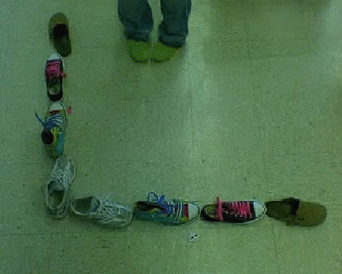
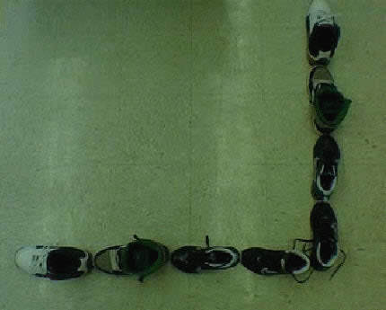
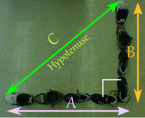

Activity: Pythagoras' Theorem
Got a Lot of Shoes? Let's Learn Pythagoras' Theorem!
What you'll need:
- shoes
- ruler
- pen and paper
1st: Gather up as many shoes as you can.
2nd: Since Pythagoras' Theorem only works for 90 degree triangles, line your shoes up to form the letter L, like this:

Or this:

3rd: Label one line of shoes A, and the other line of shoes B (you could call them "legs" of a triangle!)

4th: Measure each line of shoes with your measuring device and record them on your paper
| A = | |
| B = |
Now we have enough information to solve the distance from the tip of one line of shoes to the tip of the other line of shoes. We call this line the hypotenuse
5th: Using Pythagoras' Theorem A2 + B2 = C2 solve for the distance of C, our hypotenuse.
C = √( A2 + B2 )
6th: Plug in your recorded information for A and B and solve for C. Hint: make sure your using the same units like inches or cm's. Record your answer below
| C (by calculation) = |
7th: After recording your data, use your measuring device to measure the hypotenuse (the distance from the tip of one line of shoes to the tip of the other line of shoes). Did you get the same answer?
| C (by measurement) = |
Questions To Ask Yourself
Say, instead of measuring with your ruler you counted up the size of each shoe for the distance of each line of shoes. Would your answer change? Why?
If you would have mixed multiple units of measurement like cm's and inches while working on the project, versus using the same measuring unit, how would this have affected your answer?
Activity courtesy of Hands On Math